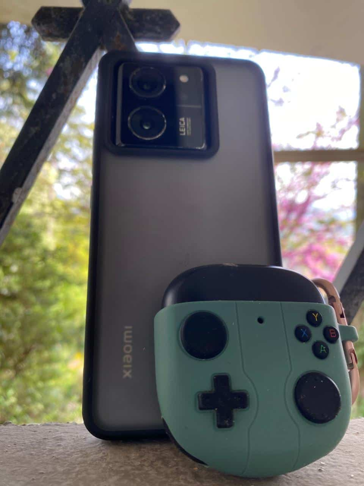

Le materiel que j'utilise
Je prends mes photos principalement avec mon telephone, un Xiaomi 13T. Je le trouve pratique parce que je peux l'avoir avec moi tout le temps et prendre une photo des qu'un endroit ou une lumiere me plait. Pour mon usage, cela me convient tres bien, surtout pour les promenades, les voyages et les photos prises sur le moment.
J'aime aussi le fait que le telephone me permette de faire quelques retouches simples apres. J'utilise surtout des applications comme Lightroom pour ajuster la lumiere, le contraste ou le cadrage quand c'est necessaire. Je ne cherche pas a trop transformer les images, mais plutot a ameliorer legerement ce que j'ai deja pris.

Ma facon de photographier
Je ne prepare pas toujours mes photos a l'avance. La plupart du temps, je photographie ce qui attire mon regard sur le moment : un escalier, un ciel de fin de journee, une vue de nuit ou une scene au bord de la mer. J'aime bien les images naturelles et spontanees, parce qu'elles representent mieux ce que j'ai vraiment vu.
Apres, je trie les photos que je prefere et je garde celles ou l'ambiance me semble la plus reussie. Cela m'aide aussi a comprendre ce que j'aime vraiment photographier et a progresser petit a petit.
Ce que je voudrais ameliorer
J'aimerais progresser encore sur les photos de nuit et sur les cadrages plus originaux. Je pense que c'est en pratiquant souvent qu'on apprend le mieux. C'est aussi pour cela que j'aime la photographie : on peut continuer a s'ameliorer sans avoir besoin d'un materiel tres complique.